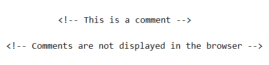

This is a normal paragraph.
This is a paragraph in italics and bold.
This is a paragraph in italics, bold and red.
This is a paragraph in size 50 blue font
This is an Unordered List
This is an Ordered List
In HTML, a colour can be specified by using a colour name. HTML supports 140 standard colour names.
Link to full list of Colour Names supported by all modern browsers.
In addition to the predefined colour names, colours can be specified in other ways, one of which is HEX (hexadecimal). Hex colour codes start with a hashtag (#) and are followed by six letters and/or numbers. The first two letters/numbers refer to the colour red, the next two to green, and the last two to blue. The color values are defined in values between 00 and FF. 000000 is black, the absence of colour and ffffff is white. It doesn't matter if the letters are typed in upper or lowercase. This gives you access to more than 16 million colours.
Note that we use the American COLOR rather than COLOUR when defining these.
Here are some examples:
Tomato background colour on a paragraph.
This needs more explanation. It is important that the path to the image is correct.
Also, it is good practice to include the height and width so as the space required for the image is reserved when the page is loaded. Without these attributes, the browser does not know the size of the image, and cannot reserve the appropriate space for it.
The alt attribute specifies an alternate text for an image if the image cannot be displayed or if the user uses a screen reader. In this case 'Shanganagh House' will display if, for whatever reason, the image doesn't load. Don't put something like 'image' or 'photo' in the alt but instead, describe the image.
As with the image, you should include the height and width of the video. If height and width are not set, the page might flicker while the video loads. Any text between the opening and closing video tags will only be displayed in browsers that do not support the video element.
If you'd prefer the video to start playing automatically, replace 'controls' with 'autoplay' or 'autoplay muted' for it to start playing without sound.
In HTML, a comment is a section of text that is not processed by the web browser. Comments are enclosed in tags (as pictured below) and are a very useful way of organising your coding.
